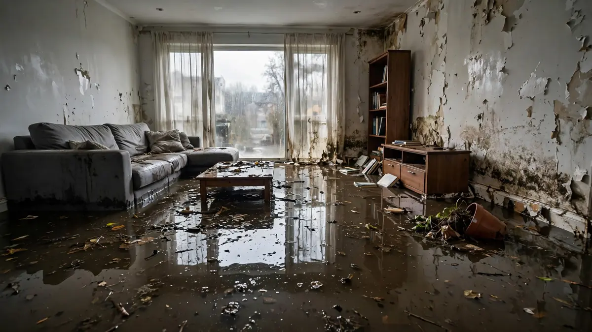

Education · Sept 20, 2026 · 6 min read
Category 1, 2, and 3 Water Damage Explained
Not all water is the same water. A burst supply line and a sewage backup are both "water damage" the way a paper cut and a broken bone are both "injuries" — technically true, practically useless. The restoration industry sorts every loss into three contamination categories, and those categories decide what gets dried, what gets thrown away, and what safety gear the crew wears. If you are trying to understand the types of water damage — Category 1, 2, and 3 — because you are staring at water in your home right now, start with the descriptions below, then read the section on telling which one you are dealing with.

The Three Types of Water Damage: Category 1, 2, and 3
The categories come from the IICRC S500, the industry's reference standard for water damage restoration. They measure contamination, not volume — a gallon of Category 3 water is a bigger problem than fifty gallons of Category 1. Every professional assessment starts here, because the category determines the entire plan.
Category 1: Clean Water
Category 1 water starts from a sanitary source: a broken supply line, an overflowing tub or sink with no contaminants, a failed ice-maker line, rainwater that fell directly without crossing dirty surfaces. At the moment of the loss it poses no substantial health risk, which is why the response centers on extraction and drying rather than removal — drywall, carpet, and most materials can usually be saved if drying starts promptly.
The catch is the word "starts." Clean water does not stay clean. Give it time, warmth, and contact with building materials, and it degrades — which is exactly what happens when a "minor" leak sits unnoticed over a weekend in a Florida summer.
Category 2: Gray Water
Category 2 — gray water — carries significant contamination: enough to cause discomfort or illness with exposure. The usual suspects are washing machine and dishwasher discharge, toilet overflows containing urine but no feces, sump pump failures, and aquarium releases. The cleanup calculus changes here. Porous materials that absorbed gray water are far more likely to be removed than dried, cleaning agents get more aggressive, and the crew's protective equipment steps up. If you need professional help at this level, gray water cleanup follows stricter protocols than a clean-water job — for good reason.
Category 3: Black Water
Category 3 is grossly contaminated water: sewage backups, toilet overflows with fecal matter, rising floodwater that has crossed soil and streets, and any water that has sat long enough to grow a thriving microbial community. Everything porous it touched gets removed, not cleaned — carpet and pad, soaked drywall, insulation. The work area gets contained so contamination does not spread through the house, and nobody enters without full protective gear. This is never a DIY category. A sewage backup cleanup is a contamination job that happens to involve water, and treating it like a mopping project is how people get sick. For the most severe black-water losses, dedicated black water cleanup protocols govern every step from containment to disposal.
Why the Category Changes — Especially in Florida
Categories are not permanent labels; they are snapshots. A Category 1 supply-line leak becomes Category 2 after a day or two sitting in warm wall cavities, and Category 2 becomes Category 3 with enough time and temperature. South Florida's climate is essentially an accelerant for this process — the same heat and humidity that make a pleasant afternoon also make an ideal incubator. This is the unglamorous reason "call quickly" is not a sales pitch: every day of delay can literally reclassify your loss into a more expensive, more disruptive category.
Why the Category Decides What Lives and What Gets Torn Out
Here is the practical translation homeowners actually need:
- Category 1: dry in place. Extract, dehumidify, verify with meters. Most materials survive.
- Category 2: selective removal. Carpet pad goes; carpet might survive with aggressive cleaning. Drywall gets evaluated case by case.
- Category 3: remove everything porous it touched. No negotiation, no "but it looks fine" — contamination does not care about appearances.
When a contractor recommends tearing out a bathroom after a sewage backup while your neighbor's supply-line leak only needed drying, this is why. Same phrase — "water damage" — completely different jobs.
How to Tell Which Category You Are Dealing With
Use your nose and your eyes, then your judgment. Clear water from a known supply source with no odor: likely Category 1. Water with an odor, discoloration, or an unknown source: assume Category 2 at minimum. Anything involving toilets, drains, sewers, or outdoor floodwater: Category 3, no debate. When in doubt, assume the worse category — overprotecting costs you caution; underprotecting costs you health. And do not run your HVAC until you know: ductwork is an excellent distribution system for exactly the things you do not want distributed.
Frequently Asked Questions
Can Category 1 water really become Category 3?
Yes. Time, temperature, and contact with building materials degrade water quality. A clean leak that sits for days in a warm, dark wall cavity can support enough microbial growth to be reclassified. Speed of response is the main variable you control.
Is rainwater Category 1?
Rain falling directly is close to clean, but rainwater that has traveled across a roof, through gutters, over soil, or across pavement has picked up contaminants — treat it as Category 2 at minimum, and ground-level floodwater as Category 3.
Why can't I just bleach Category 3 contamination and keep my carpet?
Bleach does not penetrate porous materials reliably, and it does not remove the physical contaminants embedded in fibers and pad. The standard exists because surface disinfection of a saturated porous material does not make it sanitary — removal does.
Does my insurance care about the category?
Indirectly, yes. The category drives the scope of work, and the scope drives the claim amount. A well-documented category assessment from the restoration crew is often what justifies the line items an adjuster reviews.
Who decides the official category?
The restoration professional, based on the source, the water's condition, and how long it has been present. It is a field judgment, not a lab test — which is why you want someone who does this daily making the call.